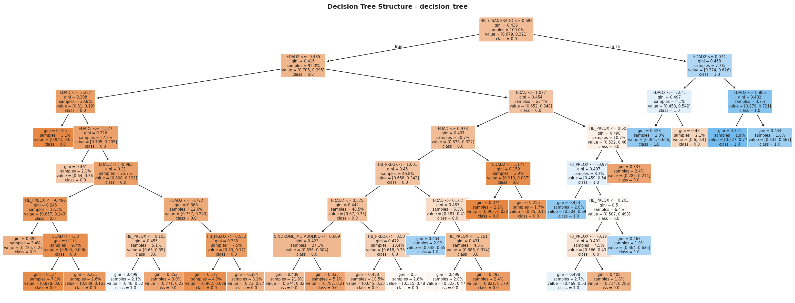

ÁRBOL FINAL INTERPRETABLE
Decision Tree como artefacto explicable para comunicación clínica
Por qué elegir un modelo interpretable
- Traduce el modelo a reglas clínicas legibles.
- Facilita discusión con equipo médico.
- Sirve como soporte de trazabilidad y auditoría.
Resumen de desempeño (Exp5)
- AUC ROC: 0.6227
- Recall: 0.8329
- Specificity: 0.3304
- Kappa: 0.1227
Árbol de Decisión Final

19